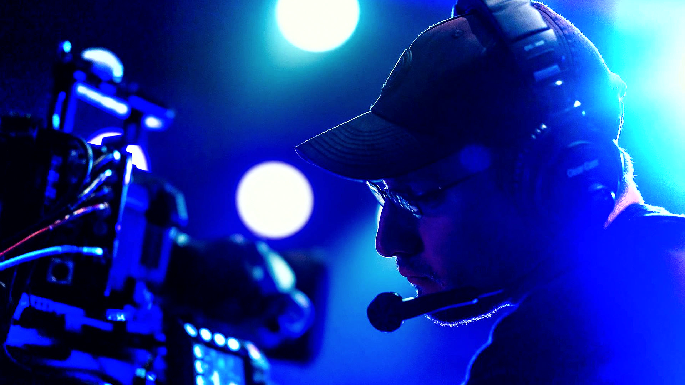
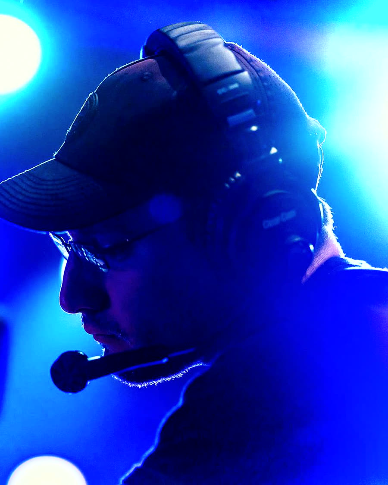
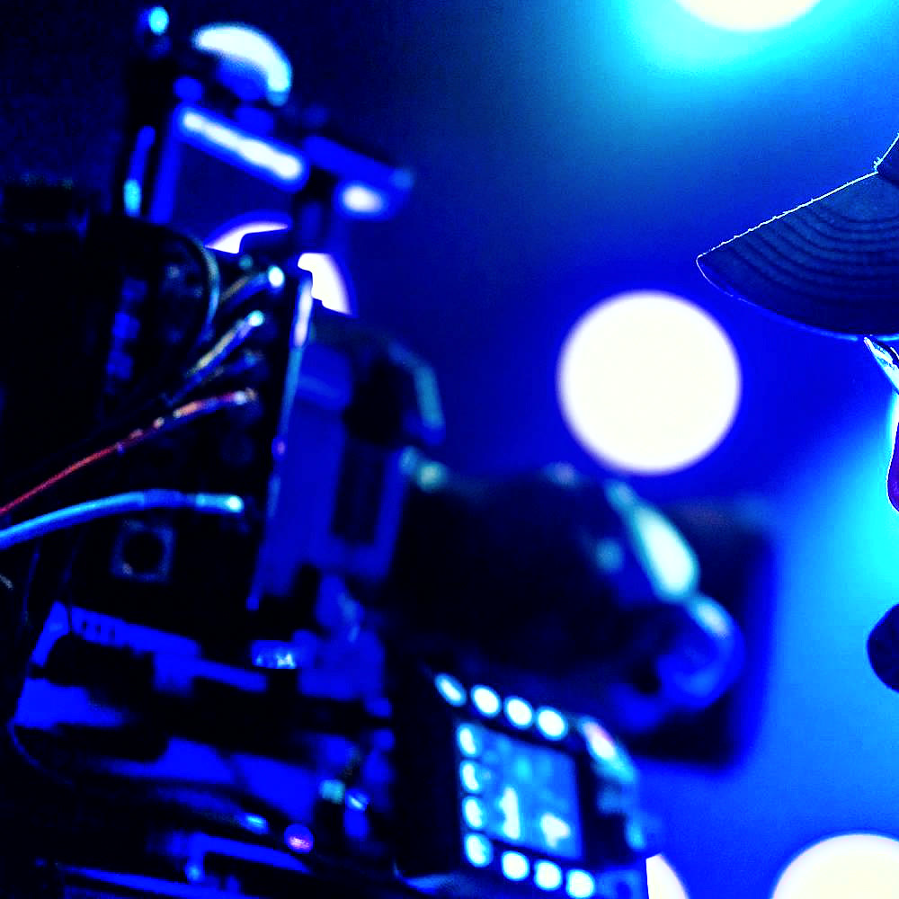

Fashion
Lumen Atelier
A season launch that needed to work as a lookbook, as a film, and as thirty seconds of vertical — from the same afternoon.

- Client
- Lumen Atelier
- Sector
- Fashion
- Role
- Director, DOP, editor
- Year
- 2026
The brief
What they needed
A small womenswear label with a strong point of view and a budget that would not stretch to separate photography and film crews. The season had to launch across the site, the newsletter and paid social in the same week.
The label wanted movement — fabric, weight, the way a coat actually falls when someone walks — not the flat, static product shots they had been making until then.
The approach
How it was shot
One set, one lighting design, two cameras: a locked-off frame for the lookbook stills and a handheld pass for the movement. Every look was shot both ways before the next one came out.
The verticals were framed vertically on the day rather than cropped afterwards, which is the difference between a reel that looks made for the platform and one that looks salvaged.
Frames
From the shoot



Delivered
What came out of it
- 1 campaign film (45s)
- 6 vertical cutdowns
- 24 lookbook stills
- Fabric & detail set
- Paid social variants
- Behind the scenes
Want something like this?
Tell Harrison what you are launching and roughly when. A reply usually lands the same day.